LilyGO ESP32 display boards
28 boards – ESP32, ESP32-C5, ESP32-P4, ESP32-S3. Filter and compare them in the interactive catalog →
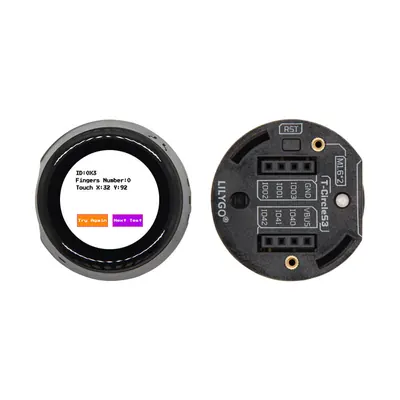
T-Circle S30.75" 160x160 TFT · ESP32-S3 · 16MB flash, 8MB PSRAM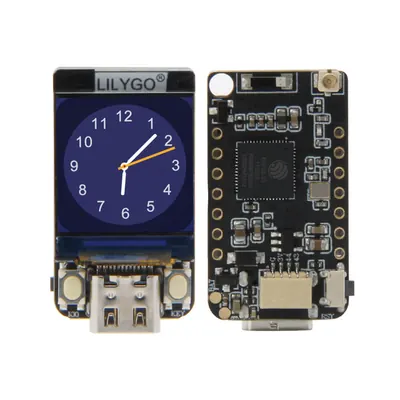
T-QT Pro0.85" 128x128 LCD · ESP32-S3 · 4MB (FN4R2) / 8MB (FN8) flash, 2MB (FN4R2 only) PSRAM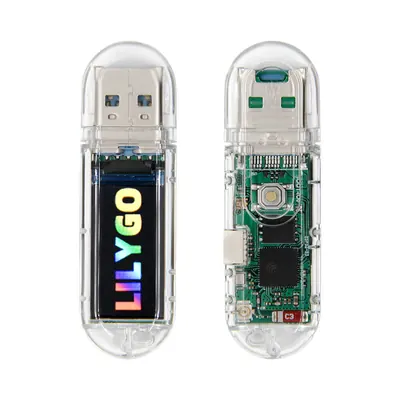
T-Dongle S30.96" 80x160 IPS · ESP32-S3 · 16MB flash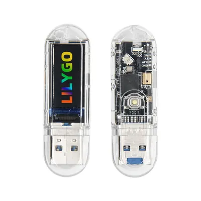
T-Dongle S3 Plus0.96" 80x160 IPS · ESP32-S3 · 16MB flash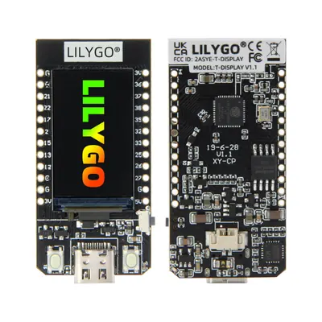
T-Display1.14" 135x240 IPS · ESP32 · 4MB / 16MB (option) flash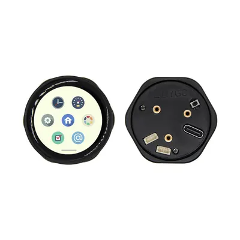
T-Encoder Pro1.2" 390x390 AMOLED · ESP32-S3 · 16MB flash, 8MB PSRAM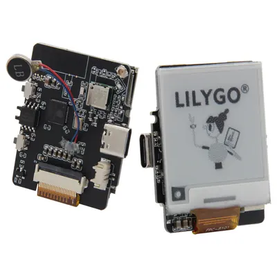
T-Wrist E-paper 1.54 Inch Display1.54" 200x200 · ESP32 · 4MB flash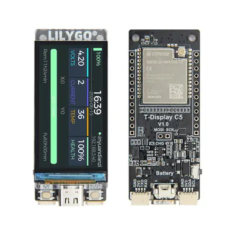
T-Display C51.9" 170x320 IPS · ESP32-C5 · 16MB flash, 8MB PSRAM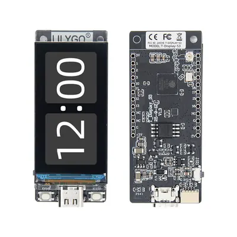
T-Display S31.9" 170x320 TFT · ESP32-S3 · 16MB flash, 8MB PSRAM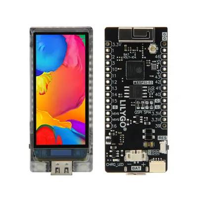
T-Display S3 AMOLED1.91" 240x536 AMOLED · ESP32-S3 · 16MB flash, 8MB PSRAM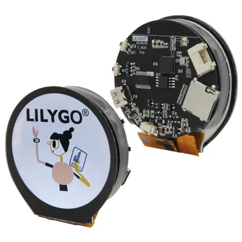
T-RGB2.1" / 2.8" (versions) 480x480 IPS Capacitive touch · ESP32-S3 · 8MB (in-package, ESP32-S3R8) PSRAM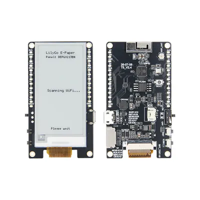
T5 V2.42.13" 122x250 · ESP32 · 4MB flash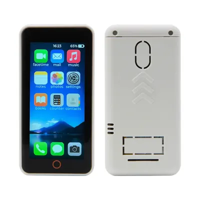
T-Display S3 Pro2.33" 222x480 IPS Capacitive touch · ESP32-S3 · 16MB flash, 8MB PSRAM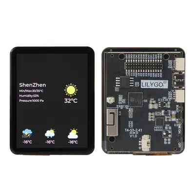
T4 S32.41" 450x600 AMOLED · ESP32-S3 · 16MB flash, 8MB PSRAM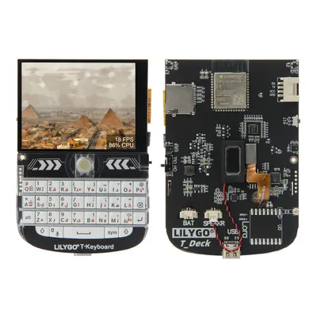
T-Deck2.8" 320x240 IPS · ESP32-S3 · 16MB flash, 8MB PSRAM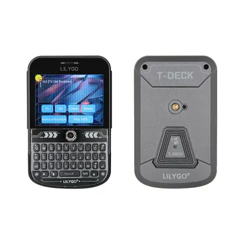
T-Deck Plus2.8" 320x240 IPS · ESP32-S3 · 16MB flash, 8MB PSRAM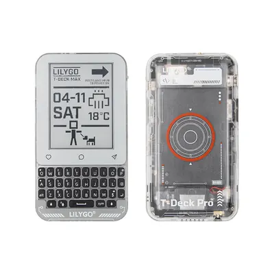
T-Deck Max3.1" 320x240 E-Paper · ESP32-S3 · 16MB flash, 8MB PSRAM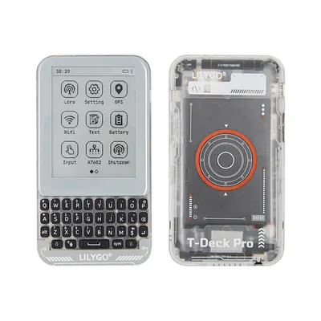
T-Deck Pro3.1" 320x240 E-paper · ESP32-S3 · 16MB flash, 8MB PSRAM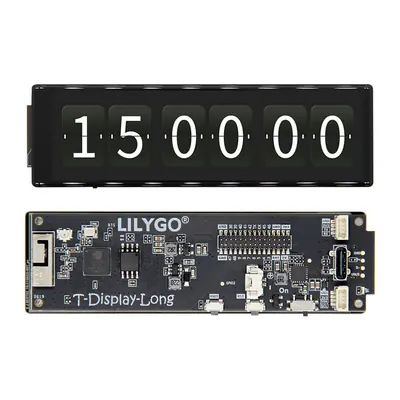
T-Display S3 Long3.4" 180x640 TFT Capacitive touch · ESP32-S3 · 16MB flash, 8MB PSRAM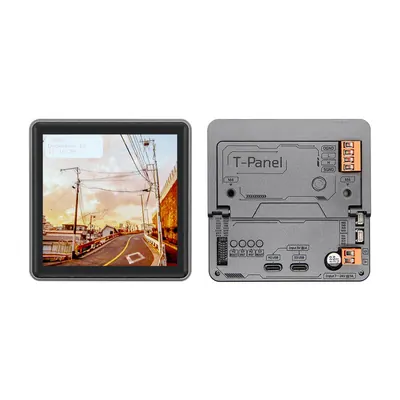
T-Panel S34.0" 480x480 IPS · ESP32-S3 · 16MB flash, 8MB PSRAM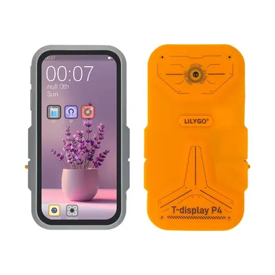
T-Display P44.05" TFT / 4.1" AMOLED (versions) Capacitive touch · ESP32-P4 · 16MB flash, 32MB PSRAM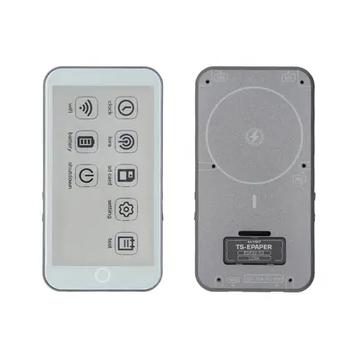
T5 E-Paper S3 Pro4.7" E-paper · ESP32-S3 · 16MB flash, 8MB PSRAM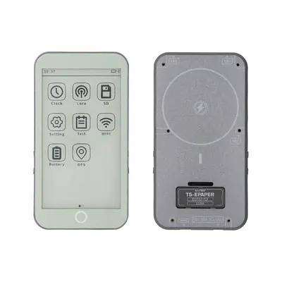
T5 E-Paper S3 Pro Lite4.7" 540x960 · ESP32-S3 · 16MB flash, 8MB PSRAM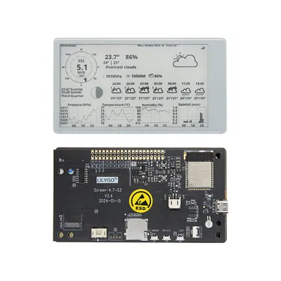
T5 e-Paper4.7" 540x950 · ESP32-S3 · 16MB flash, 8MB PSRAM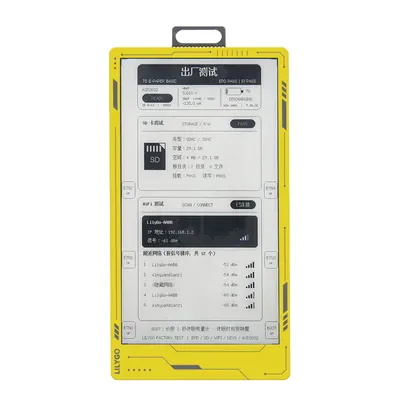
T5 e-Paper Basic4.7" 540x960 · ESP32-S3 · 16MB flash, 8MB PSRAM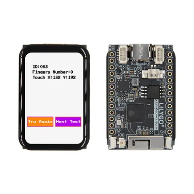
T-Display S3 AMOLED (DS)466x466 AMOLED · ESP32-S3 · 16MB flash, 8MB PSRAM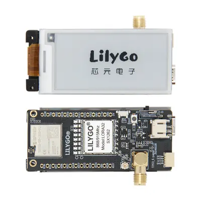
T3 S3 E-paper250x122 · ESP32-S3 · 4MB flash, 2MB PSRAM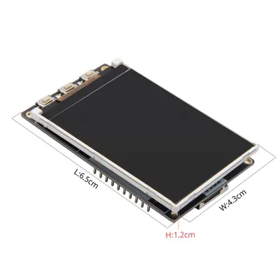
T4320x240 · ESP32 · 4MB flash, 8MB PSRAM